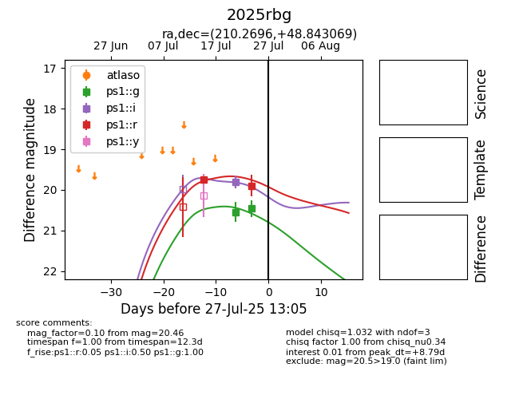

Target 2025rbg at 2025-07-27 13:05, see:
TNS: wis-tns.org/object/2025rbg
YSE: ziggy.ucolick.org/yse/transient_detail/2025rbg
alt names
2025rbg (yse,tns)
coordinates:
equatorial (ra, dec) = (210.2696,+48.84307)
galactic (l, b) = (95.7669,+64.44922)
photometry
last ps1::g=20.46, ps1::i=19.81, ps1::r=19.89
2 ps1::g, 1 ps1::i, 2 ps1::r detections
